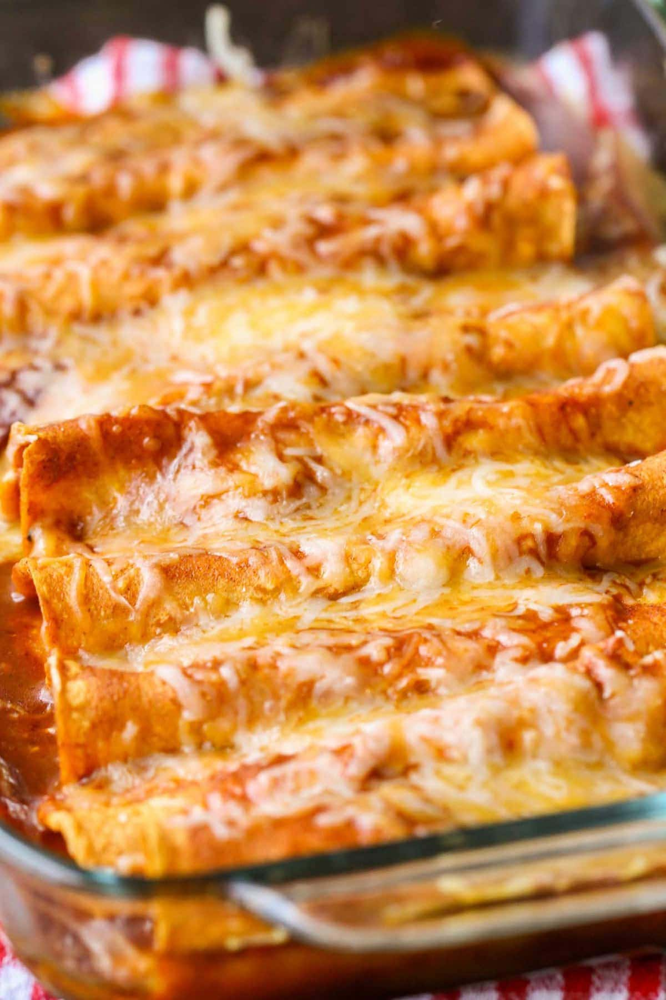

Enchiladas

Description
This recipe will take approximately a total of 1 hr and 20 min with preptime
included. This will also serve 8 people.
Ingredients
- cooking spray
- 2 cups diced cooked chicken
- 3 cups shredded Mexican-blend cheese, divided
- ½ cup sliced roasted red peppers
- 1 (4.5 ounce) can diced green chile peppers
- 1 cup sour cream
- 1 (10 ounce) can enchilada sauce
- 8 (10 inch) flour tortillas
Steps
- Spray a 9x13-inch baking dish with cooking spray.
- Mix chicken, 1 1/2 cup Mexican cheese, roasted peppers, chile peppers, and sour cream in a bowl until well combined.
- Heat enchilada sauce in a 12-inch frying pan. Dip a tortilla in the sauce until well coated and slightly softened. Top with 1/2 cup chicken mixture.
- Roll up tortilla and place seam side-down in the prepared baking dish. Repeat with remaining tortillas and chicken mixture. Top enchiladas with remaining sauce and
sprinkle with remaining cheese. Spray a sheet of foil with cooking spray, and place it greased side down on the dish; seal to cover.
- Refrigerate until ready to cook, up to 2 days.
- When ready to bake, remove enchiladas from the refrigerator and let sit for 30 minutes. Keep foil cover on.
- Preheat the oven to 350 degrees F (175 degrees C).
- Bake in the preheated oven until bubbly, about 1 hour.
Home Page